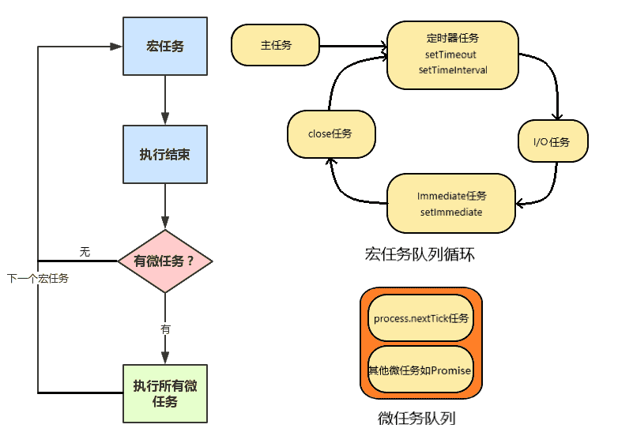

本文包含了Node.js的部分基础内容, 参考了http://nodejs.cn/learn, 请注意本文不是教程, 不以总结全面为目标, 仅仅是记录下自己觉得有价值的点, 作为参考.
事件循环(Event Loop)
关于浏览器的事件循环, 见我的关于浏览器的文章浏览器基础.
首先我们要表述一下Node.js的事件循环, 在我基本弄清浏览器的事件循环之后, Node.js的事件循环对我的认知冲击了好多次, 我也不知道为啥要设计得这么复杂这么拗[摊手]… 说实话Node.js的事件循环有很多的坑, 主要有以下几个方面:
- 加入了
process.nextTick, 你可以认为它是微任务, 但它总在其他微任务之前(说好的队列先进先出, 但它有”军人优先”的权利) - 加入了
setImmediate, 但是并不一定是”立刻”执行, 并不如process.nextTick快 - 之前是每执行完一个阶段的所有宏任务才会去执行微任务, 但是新版本Node.js向浏览器看齐了, 即每单个宏任务后都会清空微任务队列(很多旧教程都是错的啊)
- 如果主线程在执行定时器任务, 那么此时产生的任务会被加入到下一个循环中, 在执行Immediate任务时也是这样(文档里也没提啊)
在Node.js中, 有大量的多线程操作, 比如I/O(ajax, 读文件等), 定时器等, 为了不阻塞主线程, 它们最好是异步运行, 基于事件来通知主线程. 同时, 我们还可以通过Promise来对它们包装(Promise代表执行顺序, 是一种异步包装方式, 本身不会开辟新线程执行代码).
此外, Node.js还规定了process.nextTick和setImmediate这两个函数, 用于在异步操作的不同时机触发事件, 产生任务.
Node.js的异步执行方式和之前好像有出入, 以下结论基于Node.js(v14.5.0)的结果.
Node.js的异步执行方式是这样的:
JavaScript主线程中JavaScript解释器自上而下解释主任务代码, 根据作用域链对执行栈进行压栈弹栈, 遇到多线程代码会开辟子线程处理. 子线程的代码只要执行完毕, 就会触发事件通知主线程, 并往任务队列里面添加任务. 主线程接到事件通知, 待空闲时就会检测任务队列, 只要其中有任务, 就出队一个任务, 将其压入执行栈执行, 执行完毕后再次在任务队列里取任务, 直到任务队列为空. 这就是事件循环(Event Loop)机制.
如下图所示, 任务分为两种, micro task(微任务)和macro task(宏任务), 前者主要包含process.nextTick, Promise, 后者包含主任务, setTimeout, setInterval, I/O, setImmediate等. JavaScript主线程会先从宏任务队列循环中出队一个宏任务(第一次取出的就是主任务), 执行这个宏任务, 任务执行完毕后再读取微任务队列, 并按顺序执行所有的微任务, 只有微任务队列没有事件时, 才会再次读取宏任务队列循环. 读取宏任务先读取本宏任务队列, 只有本宏任务队列没有任务时, 才会按照循环读下一个宏任务队列.

和浏览器不同的是, 首先我们可以认为Node.js的事件循环的微任务队列中process.nextTick总是在最前面的, 再者Node.js的宏任务队列有多个, 每次读宏任务都要清空本宏任务队列, 才会去读下一个宏任务队列.
另外, Node.js和浏览器的退出机制不同, 这对事件循环有一定的影响. 和浏览器一样的是, Node.js也是只要有事件就会启动事件循环, 清空了队列就会停止事件循环. 不过, 浏览器中不用考虑退出机制, 因为用户自己会退出, 整个页面打开的过程主线程是一直在监听事件的; Node.js不一定会有用户触发的事件, 事情做完了自己会退出, 事件循环也就停止了. Node.js主线程会记录是否还有进行中的子线程(定时器, I/O等), 有的话就会阻塞在poll阶段等待事件, 没有的话就会退出.
在Node.js中,
setTimeout和setInterval的时间最小设置值是1(ms), 也就是说第二个参数设为1和0是一样的. 不过有时把第二个参数设为2也会表现为和1一样(玄学), 所以使用定时器函数时最好把时间间隔设为大于4ms.
注意, 在执行定时器任务时, 新的任务会被添加到下一个循环. 对于Immediate任务来说也是如此. 这一点可以在下面的例子中看出(‘setTimeout2’).
下面是关于Node.js事件循环的例子:
setTimeout(() => { |
process对象
退出进程
可以使用
process.exit(n)来强制退出进程, 其中n代表退出码. 退出码表示进程退出时返回的一个数字, 用于和其他进程通信. 设置退出码还可以通过process.exitCode = 1来设置, 这样不仅process.exit()时会使用该退出码, 进程自然结束时也会使用该退出码. 当然, 不同的退出码有不同的意义, 不同的情况会自动触发不同的退出码, 比如1代表”未捕获异常”. 所以一般不通过编程操作退出码.向进程发送信号
使用
process.kill(pid, signal)来向进程发送信号. pid为进程id, 使用process.pid获得本进程PID; signal为信号, 为字符串或数字, 如SIGTERM或15表示正常终止(非Windows),SIGKILL或9表示立即终止.有些信号可以绑定事件监听器, 通过`process.on(signal, handle)就可以设置回调函数.
通过
process.kill(pid, signal)关闭进程, 那么进程的退出码将会是128加上信号的值.使用
process.nextTick进行异步操作, 详见事件循环.使用
process.env读取系统环境变量.使用
process.argv访问命令行参数.
通过命令行I/O
使用
console对象输出.(和浏览器基本相同)console.log()console.clear(), 但是Node.js中没有浏览器中的clear()函数console.count(), 打印字符串并计数console.trace(), 打印堆栈踪迹console.time(tag)console.timeEnd(tag), 计算两者间时间并输出到控制台console.error(), 打印到错误流, 不会再控制台上显示- 使用
chalk软件包对控制台输出着色(npm安装)
从命令行接收输入.
- 使用
readline模块const readline = require('readline').createInterface({
input: process.stdin,
output: process.stdout
});
readline.question('你叫什么名字?', name => {
console.log(`你好 ${name}!`);
readline.close();
}) - 使用
Inquirer软件包(npm安装)const inquirer = require('inquirer')
var questions = [
{
type: 'input',
name: 'name',
message: '你叫什么名字?'
}
]
inquirer.prompt(questions).then(answers => {
console.log(`你好 ${answers['name']}!`)
})
- 使用
npm
安装软件包
npm i packagenpm i package -Snpm i package --save, 安装软件包到当前项目npm i package -Dnpm i package --sav-dev, 安装仅开发依赖的软件包到当前项目npm i package -g, 全局安装软件包, 一般会添加可执行文件npm i package@n.n.n, 指定版本安装软件包
查看软件包
npm list, 列出当前项目的依赖包npm list --depth=0, 仅列出顶层依赖包, 即写在package.json里的依赖包npm list -g, 列出全局安装的软件包
运行可执行文件
npx exe_name, 运行可执行文件, 依次搜索本项目安装的依赖包, $PATH和网络是否有此可执行文件exe_name, 安装在全局的软件包的可执行文件可直接运行($PATH包含的话)
更新软件包
npm view package version, 查看指定软件包的最新版本npm outdated, 查看当前项目的所有软件包的最新版本npm update, 更新次版本或补丁版本变动的软件包, 不会更新主版本变动的软件包
卸载软件包
npm uninstall package, 卸载软件包, 但不会修改package.jsonnpm uninstall package -S, 卸载软件包, 同时删除package.json的dependencies中此软件包的字段npm uninstall package -D, 卸载软件包, 同时删除package.json的devDependencies中此软件包的字段
package.json中的语义版本控制>, 高于指定版本的任何版本>=, 等于或高于指定版本的任何版本<, 低于指定版本的任何版本<=, 低于或高于指定版本的任何版本=[无前缀], 确切的版本^, 补丁版本和次版本高于指定版本的任何版本~, 补丁版本高于指定版本的任何版本n.n.n - n.n.n, 版本范围||, 组合规则latest, 最新版本
EventEmitter
我的疑问: EventEmitter是怎么和Event Loop结合的呢? eventEmitter.emit()这个函数是在什么地方被调用的呢?
const EventEmitter = require('events'); |
EventEmitter只是改变了”回调地狱”的书写方式, 本身还是同步运行的.
其他
其他的关于fs, http, stream, buffer就不多介绍了.
不过有一点要提一下. ArrayBuffer是es6里面规定的, 代表储存二进制数据的一段内存.
而TypedArray也是es6里面规定的, 是以指定格式解读ArrayBuffer的一种方法, Uinit8Array是TypedArray(视图)的一种.
Node.js中的Buffer类就是继承自Uint8Array. Buffer类的对象内部实际存在一个ArrayBuffer类的对象, 所以可以认为Buffer是ES6标准中的ArrayBuffer和Uinit8Array的结合体.
请看下面ArrayBuffer和Buffer互转的例子:
//把ArrayBuffer转换成Buffer(1) |